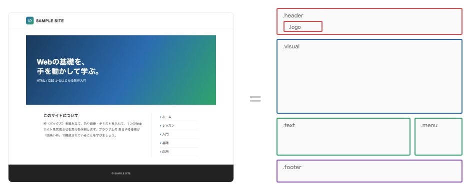
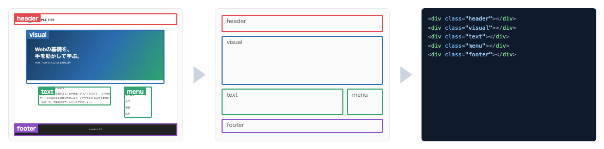
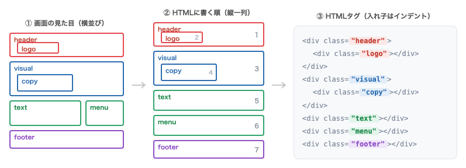
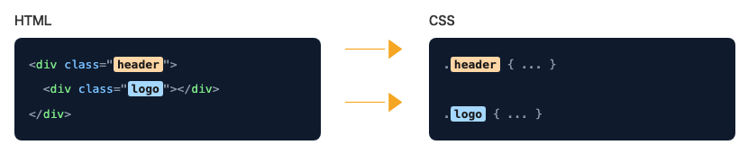
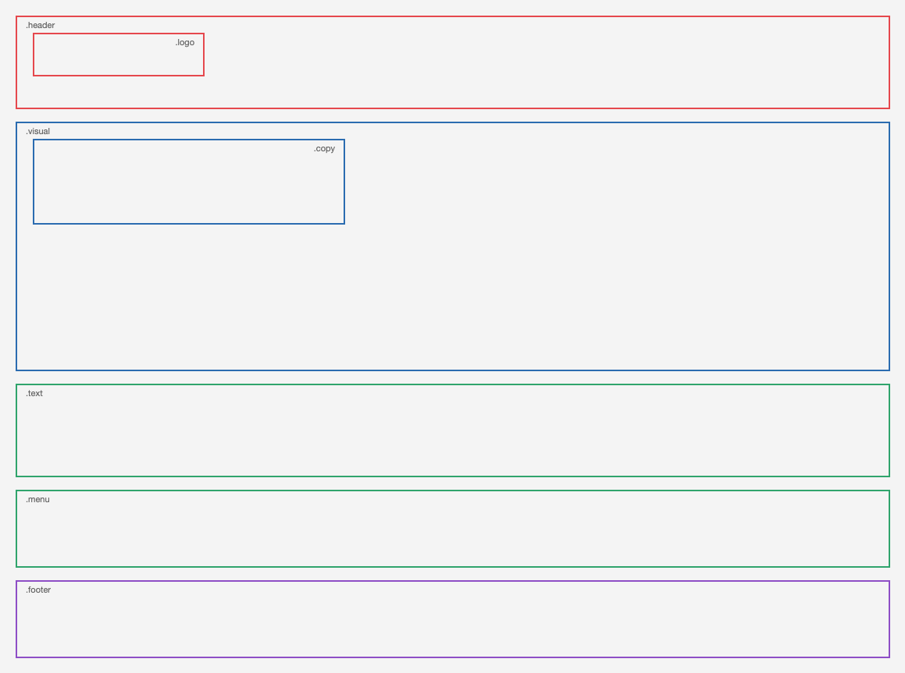
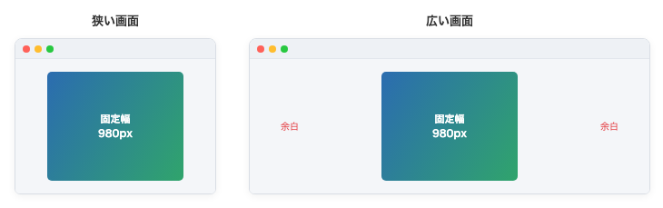
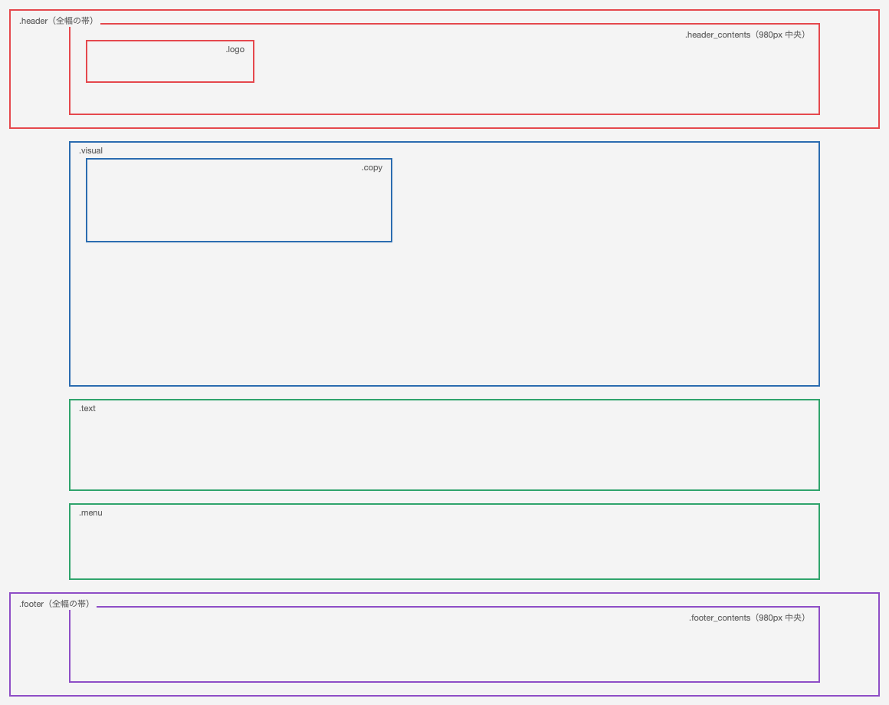
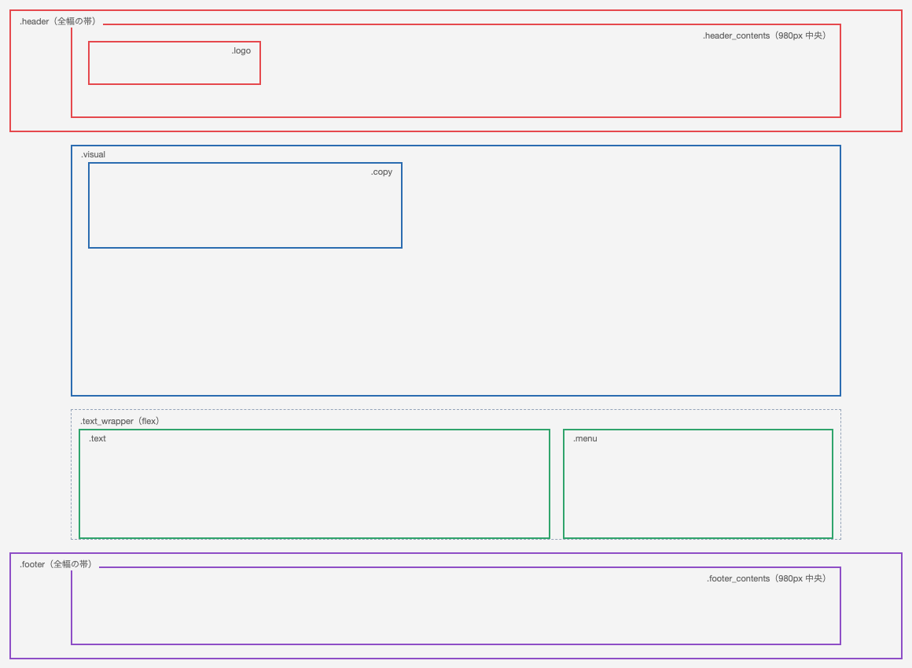
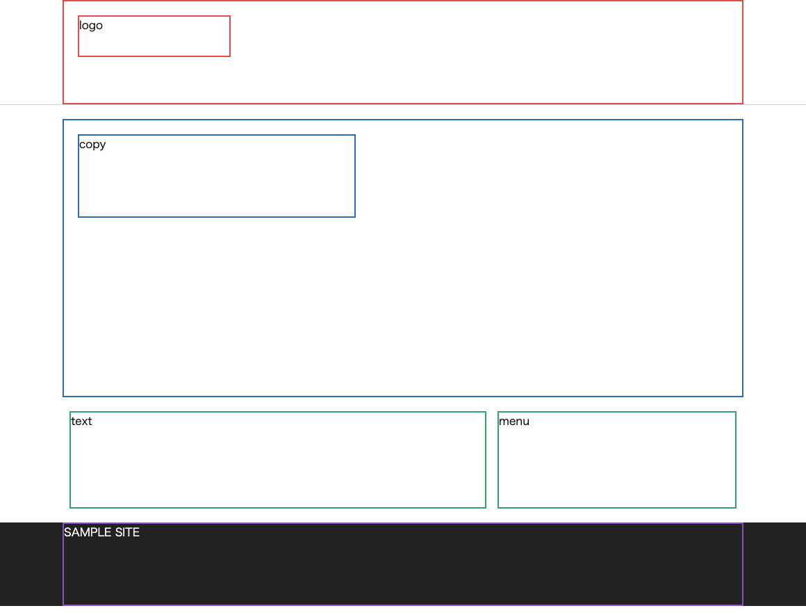

目次
8. 簡単なWebサイトを作ってみよう
ここからは、実際に1ページ分のWebサイトを組み立てていきます。今回作るのは、色や文章がまだ入っていない「枠だけのホームページ」です。
いきなりコードを書き始めるのではなく、まずは完成イメージを紙に鉛筆でラフに描くところから始めます。どこに何を置くのかを先に決めておくと、コーディングが迷わず進みます。
Webページはすべて「四角い枠」でできている
Webページを作るうえで最初に押さえてほしい考え方が「枠」です。ブラウザに表示されるものは、写真も文章もボタンも、すべて四角い枠の中に入っています。
画面上には三角形や丸、斜めの装飾も見えますが、それらもすべて四角い枠の中で描かれているだけです。「Webページ＝四角い枠の組み合わせ」と考えると、複雑に見えるデザインもシンプルに捉えられます。

デザインを見たら、まず「どんな四角い枠に分けられるか」を考えます。枠に分解できれば、そのままHTMLの構造になります。
9. 枠をなぞってHTMLを作る
ラフデザインを枠線だけで描き直すと、ページの構造がはっきり見えてきます。今回の「SAMPLE SITE」では、次のような枠に分けて考えます。
header… ページ上部。中にlogoの枠を持つvisual… 大きなメインビジュアル。中にcopy（キャッチコピー）の枠を持つtext… 本文の枠menu… メニューの枠footer… ページ下部

header・visual・text・menu・footer）が、そのまま②の枠・③のタグに対応している。
枠に名前をつけるとHTML文書になる
枠の名前を上から順番に書き、開始タグと終了タグで囲めば、それがそのままHTML文書になります。ここでは特別な意味を持たない汎用的な枠として <div> タグを使います。
入れ子（枠の中の枠）は、インデント（字下げ）でずらして書くと、親子関係がひと目でわかるようになります。

text・menu）を、②HTMLに書く順（上から縦一列に並べ替え）にしてから、③タグにする。枠の名前がそのまま class の値に、入れ子はインデントになる（横並びに戻す指定は第12章の flex で行う）。
1 2 3 4 5 6 7 8 9 10 11 12 13 14 15 16 17 18 19 20 21 22 23 24 25 26 27 28 29 30 31 32 33
<html> <head> <title>練習</title> <link href="css/style.css" rel="stylesheet"> </head> <body> <div> header <div> logo </div> </div> <div> visual <div> copy </div> </div> <div> text </div> <div> menu </div> <div> footer </div> </body> </html>
枠の中に書いた
header や logo といった文字は、どの枠かを確認するための目印です。実際のサイトではロゴ画像や見出しに置き換わります。
この状態では、すべての
<div> が同じ扱いになるため、CSSで div { ... } と書くと全部の枠に同じデザインが一括で適用されてしまいます。枠ごとに別のデザインをするには、次の章の「名前をつける」作業が必要です。
10. 枠に名前をつけて個別にデザインする
すべての <div> に同じデザインが当たってしまう問題を解決するには、枠ごとに個別の名前をつけます。ここで使うのが class という属性です。
class でグループ分けする
class は「この枠は○○の仲間」というグループ名をつけるイメージです。<div class="header"> のように書き、CSS側では先頭にドットを付けて .header { ... } と指定すると、その名前の枠だけをデザインできます。

class="名前" と、CSSの .名前 が同じ名前でつながる。
1 2 3 4 5 6 7 8 9 10 11 12 13 14 15 16 17 18 19 20 21 22 23
<html> <head> <title>練習</title> <link href="css/style.css" rel="stylesheet"> </head> <body> <div class="header"> header <div class="logo">logo</div> </div> <div class="visual"> visual <div class="copy">copy</div> </div> <div class="text">text</div> <div class="menu">menu</div> <div class="footer">footer</div> </body> </html>
| 書き方 | 意味 |
|---|---|
<div class="header"> |
この枠に「header」という名前（グループ）をつける |
.header { ... } |
CSS側で「header」という名前の枠だけにデザインを指定する |
HTMLの
class="名前" と、CSSの .名前 はセットです。この2つの名前が一致していないと、デザインは反映されません。
今の段階では、枠の大きさも色もバラバラで、思い描いたデザインとは全く違って見えます。それで問題ありません。HTMLは構造（枠組み）を作るための言語であり、高さ・幅・色などの見た目はこのあとCSSで整えていきます。
この時点での枠の並び方
枠の位置が分かるように、構造を線で示すと次のようになります。まだ中央寄せも横並びも指定していないため、各枠は画面幅いっぱいに広がり、上から下へ縦に積み重なっているだけの状態です。

この図は枠の構造を線で示したもので、枠線・高さは確認用です。実際の枠線・高さは第13章の完成CSSでまとめて指定します。ここでは各枠が縦に積み重なる並び方に注目してください。
11. 枠を中央に配置する margin
Webサイトの横幅には、大きく分けて「固定幅」と「可変幅」の2種類があります。閲覧者の画面サイズはバラバラなので、中身が横に広がりすぎないよう、コンテンツの幅をコントロールする必要があります。

| 種類 | 説明 |
|---|---|
| 固定幅 | コンテンツの幅を 980px などに固定する。大きな画面でも横に広がりすぎない。今回のページで中身を入れる枠（このあと出てくる header_contents など）がこれにあたる。 |
| 可変幅 | 画面幅に合わせて伸び縮みする。背景色や下線を画面いっぱいに広げたいときに使う。今回のヘッダー・フッターの帯がこれにあたる。 |
今回のページは、この2つを組み合わせます。ヘッダーとフッターの帯（背景・下線）は画面いっぱいの全幅にして、その中に置く中身（header_contents / footer_contents）だけを980pxの固定幅で中央寄せにします。こうすると「背景は画面の端まで伸びるのに、文字やロゴは中央の980pxにそろう」という、多くのサイトで使われるレイアウトになります。
margin: 0 auto; で中央に寄せる
今回は「固定幅のコンテンツを、画面の中央に置く」レイアウトにします。そのために、中身を入れるための枠（header_contents / contents / footer_contents）を用意し、CSSで幅を 980px に固定したうえで margin: 0 auto; を指定します。これらの枠は、第9章の分解図では省略していた「中身を入れる枠」で、中央寄せのためにここで新しく足すものです。外側の header や footer は幅を指定せず全幅のままにしておくと、背景や下線は画面の端まで伸びたまま、中身だけが中央にそろいます。
margin: 0 auto; は「上下の余白は0、左右の余白は自動（auto）」という意味です。左右の余白を自動にすると、余白が均等に振り分けられ、結果として枠が中央に配置されます。
中身を入れる枠を追加したHTML
1 2 3 4 5 6 7 8 9 10 11 12 13 14 15 16 17 18 19 20 21 22 23 24
<body> <div class="header"> header <div class="header_contents"> <div class="logo">logo</div> </div> </div> <div class="contents"> <div class="visual"> visual <div class="copy">copy</div> </div> <div class="text">text</div> <div class="menu">menu</div> </div> <div class="footer"> footer <div class="footer_contents"> SAMPLE SITE </div> </div> </body>
中央寄せを指定するCSS
1 2 3 4 5 6 7 8 9 10 11 12 13 14 15
/* ヘッダー・フッターは全幅の帯（背景や下線が画面端まで伸びる） */ .header { border-bottom: 1px solid #cbd5e1; } .footer { background: #222; } /* 中身は 980px に固定して中央寄せ（全幅の帯の中に置く） */ .header_contents, .contents, .footer_contents { width: 980px; margin: 0 auto; }

.header／.footer）はそのままに、中身の header_contents・contents・footer_contents を width: 980px; margin: 0 auto; で中央に寄せた状態。左右に均等な余白ができている。この図は枠の構造を線で示したもので、枠線・高さは確認用です。実際の枠線・高さは第13章の完成CSSでまとめて指定します。ここでは中央寄せの指定に注目してください。
中央寄せは「幅を決める」＋「
margin: 0 auto; を指定する」の2つがセットです。幅が決まっていない（画面いっぱいの）枠には auto が効かないため、中央に寄りません。
CSSが反映されないときは、まず次の点を確認してください。
- ファイルを保存したあと、ブラウザを再読み込み（リロード）したか
- 値の最後が
;（セミコロン）ではなく:（コロン）になっている - HTMLの
class名と、CSSのセレクタ名が違っている（例：headrとheader） class="header"と書くべきところをclass-"header"のように書いてしまっている
12. 2つの枠を横並びにする flex
これまでの枠は上から下へ縦に積み重なっていました。text（本文）と menu（メニュー）を左右に並べたいときは、この2つをさらに大きな枠で囲み、その枠に横並びの指定をします。
ラッピングして flex を指定する
横に並べたい枠を、もう一段大きな枠でまとめることを「ラッピングする」といいます。ここでは text_wrapper という枠で text と menu を囲みます。
その text_wrapper に display: flex; を指定すると、中の子要素が横並びになります。さらに justify-content: center; を加えると、横並びになった子要素が枠の中央にまとまります。
text と menu をラッピングしたHTML
1 2 3 4
<div class="text_wrapper"> <div class="text">text</div> <div class="menu">menu</div> </div>
横並びを指定するCSS
1 2 3 4
.text_wrapper { display: flex; justify-content: center; }
| プロパティ | 役割 |
|---|---|
display: flex; |
この枠を「中の子要素を横並びにする枠」に切り替える |
justify-content: center; |
横並びになった子要素を、枠の中央にまとめる |

text と menu が、横並びになった状態。この図は枠の構造を線で示したもので、枠線・高さは確認用です。実際の枠線・高さは第13章の完成CSSでまとめて指定します。ここでは横並びの指定に注目してください。
display: flex; は、指定した枠そのものではなく「その枠の直接の子要素」の並び方を変えるものです。横に並べたい要素の1つ上の枠に指定する、と覚えてください。
flex には、縦揃えを指定する
align-items など、他にも多くの指定があります。ここでは「横に並べる」と「中央にまとめる」の2つだけ押さえれば十分です。詳しい使い方は今後の研修で扱います。
13. 枠だけのホームページが完成
ここまでの内容をまとめると、枠だけのホームページの土台が完成します。以下が、完成したHTMLとCSSの全体です。
完成したHTML
1 2 3 4 5 6 7 8 9 10 11 12 13 14 15 16 17 18 19 20
<div class="header"> <div class="header_contents"> <div class="logo">logo</div> </div> </div> <div class="contents"> <div class="visual"> <div class="copy">copy</div> </div> <div class="text_wrapper"> <div class="text">text</div> <div class="menu">menu</div> </div> </div> <div class="footer"> <div class="footer_contents">SAMPLE SITE</div> </div>
完成したCSS
枠の位置と大きさが分かるように、確認用としてそれぞれの枠に border（枠線）を付けています。中央寄せの margin: 0 auto; と、横並びの display: flex; がそのまま使われていることに注目してください。また、横並びにした .text に margin-right を付けて、text と menu の間にすき間（余白）を作っています。
冒頭の
* { ... } は、これから書くすべての枠に共通の下準備をするおまじないです。* はすべての要素に適用するという意味で、box-sizing: border-box; は枠線やpaddingを width の中に含める設定です。これがあるおかげで、幅を 980px と指定した枠に枠線を付けても幅が崩れず、きれいにそろいます。margin: 0; padding: 0; は、ブラウザが最初から付けている余白をリセットして、指定どおりの位置に枠を並べるためのものです。
1 2 3 4 5 6 7 8 9 10 11 12 13 14 15 16 17 18 19 20 21 22 23 24 25 26 27 28 29 30 31 32 33 34 35 36 37 38 39 40 41 42 43 44 45 46 47 48 49 50 51 52 53 54 55 56 57 58 59 60 61 62 63 64 65 66 67 68 69 70
* { box-sizing: border-box; margin: 0; padding: 0; } /* 中身は 980px に固定して中央寄せ（全幅の帯の中に置く） */ .header_contents, .contents, .footer_contents { width: 980px; margin: 0 auto; } /* ヘッダー：全幅の帯（下線が画面端まで伸びる） */ .header { border-bottom: 1px solid #cbd5e1; } .header_contents { height: 150px; border: 2px solid #e5484d; } .logo { width: 220px; height: 60px; border: 2px solid #e5484d; margin: 20px; } .visual { height: 400px; border: 2px solid #2b6cb0; margin-top: 20px; } .copy { width: 400px; height: 120px; border: 2px solid #2b6cb0; margin: 20px; } /* text と menu を横並びにする */ .text_wrapper { margin-top: 20px; display: flex; justify-content: center; } .text { width: 600px; height: 140px; border: 2px solid #30a46c; margin-right: 16px; } .menu { width: 344px; height: 140px; border: 2px solid #30a46c; } /* フッター：全幅の暗い帯（画面端まで伸びる） */ .footer { background: #222; margin-top: 20px; margin-bottom: 40px; } .footer_contents { height: 120px; border: 2px solid #8e4ec6; color: #fff; }
ブラウザでの表示イメージ
このHTMLとCSSをブラウザで開くと、次のように枠だけのレイアウトが表示されます。

色も文章もまだ入っていませんが、これがWebページの土台です。この枠の中に、ロゴ画像・キャッチコピー・本文・メニューを流し込んでいけば、少しずつ本物のサイトに近づいていきます。
ここで引いた枠線（
border）は、枠の位置や大きさを確認するための一時的な目印です。実際のサイトでは枠線を消し、代わりに背景色や画像・テキストを入れていきます（次のページで扱います）。